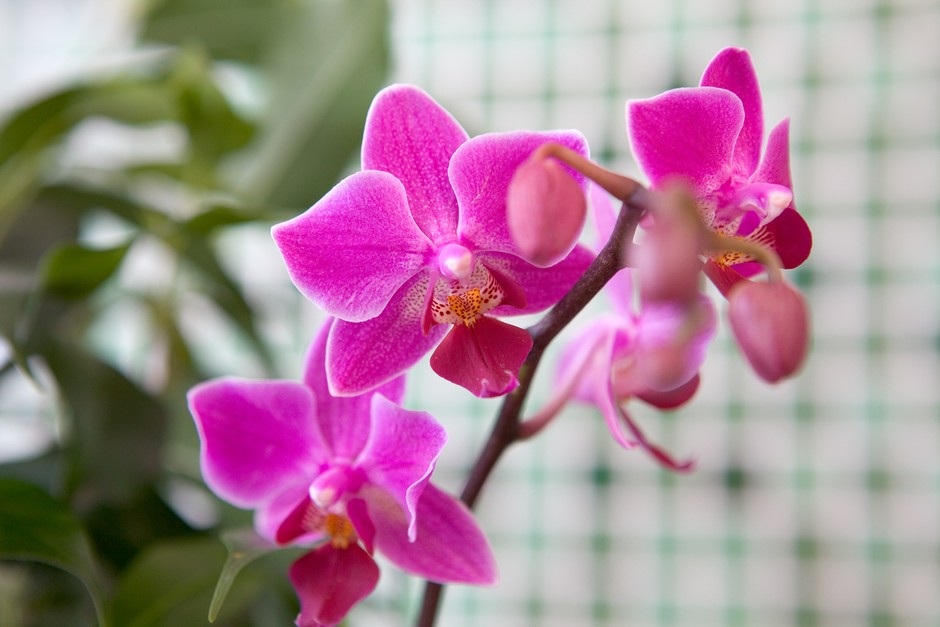

Orchid
Orchids are exquisite flowering plants belonging to the Orchidaceae family, renowned for their intricate and often colorful blooms. Here's a comprehensive guide on orchids, including their characteristics, types, planting procedure, and care
- Planting Procedure:
- Anytime: Orchids can be planted or repotted at any time of the year, depending on the species and individual plant's needs.
- Light: Most orchids prefer bright, indirect light. Avoid direct sunlight, which can burn the leaves.
- Temperature: Orchids thrive in temperatures ranging from 60°F to 80°F (15°C to 27°C) during the day and slightly cooler temperatures at night.
- Humidity: Orchids prefer high humidity levels, around 50% to 70%. You can increase humidity by placing the orchids on trays filled with pebbles and water.
Weather in Kathmandu
Temperature: °C
Humidity: %
Condition:
Date & Time: